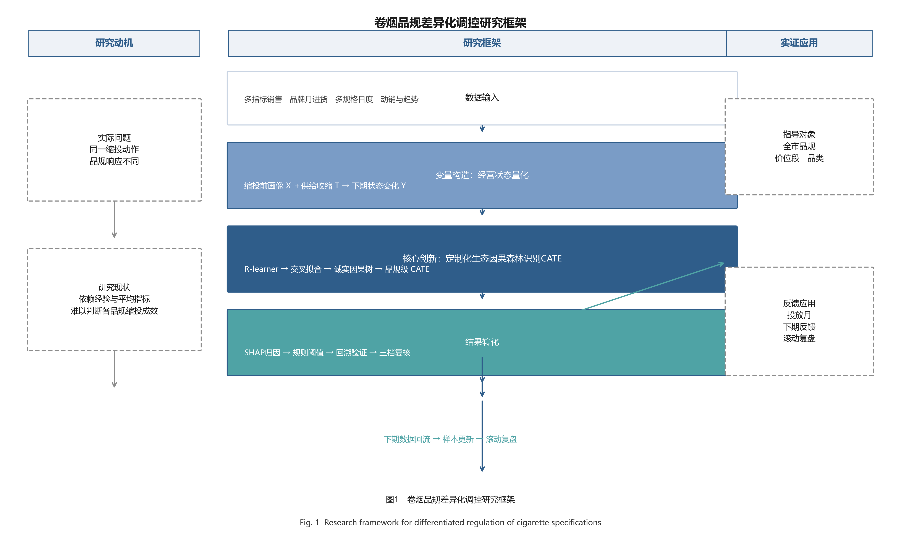
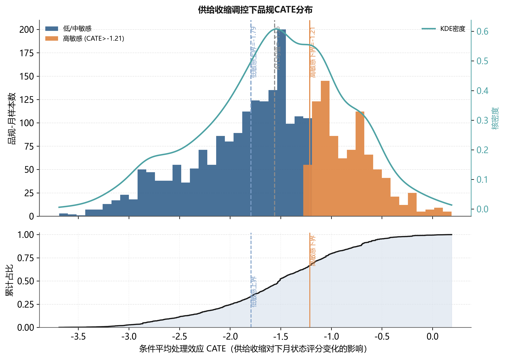
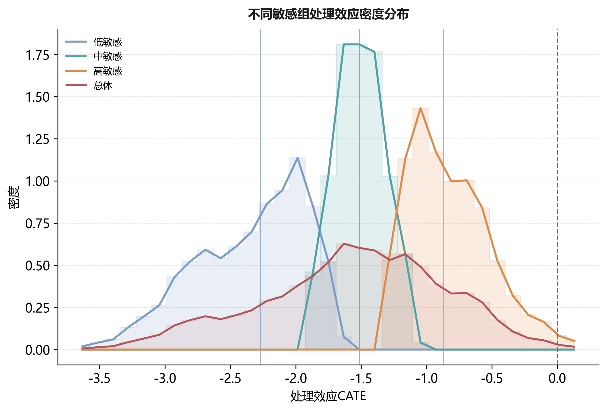
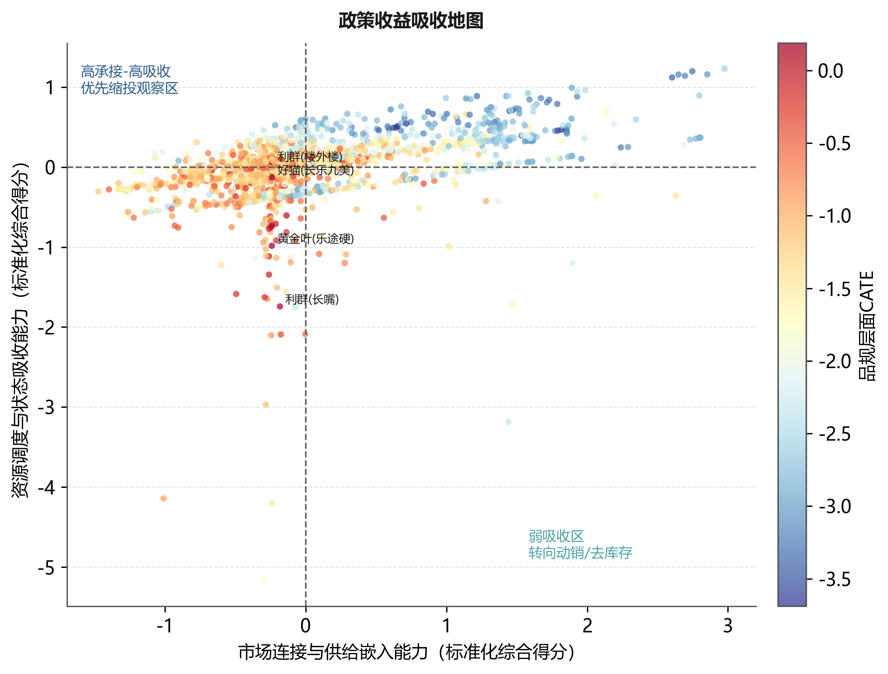
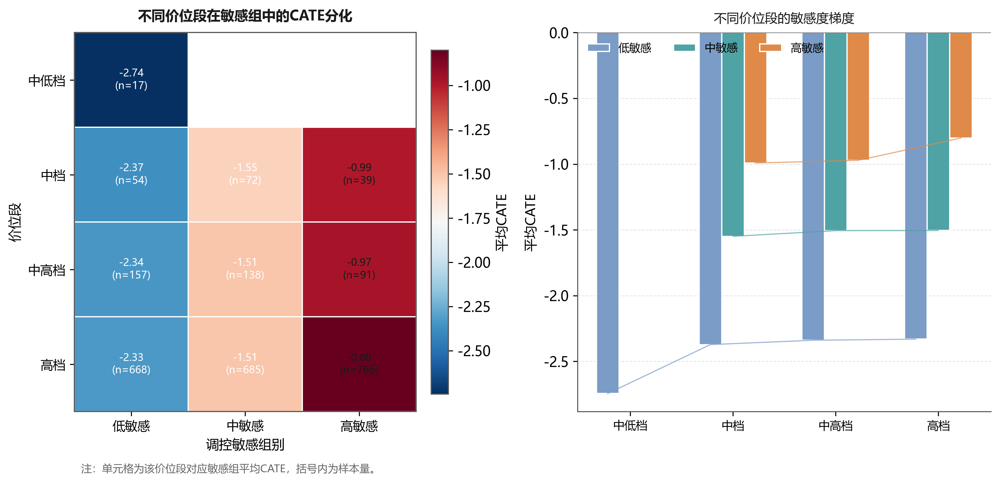
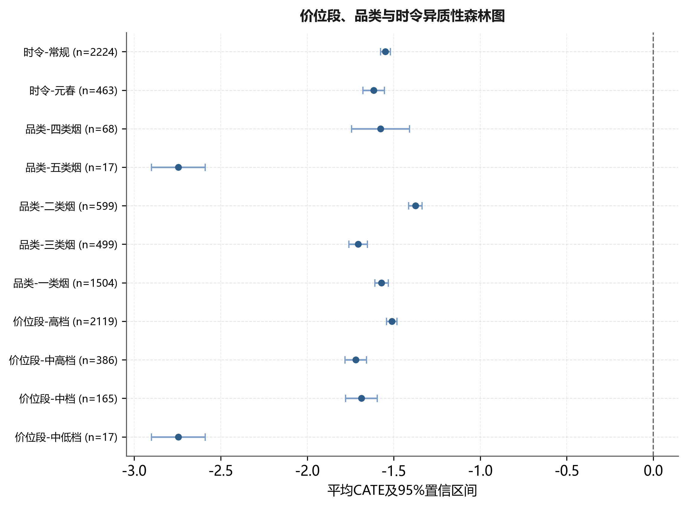
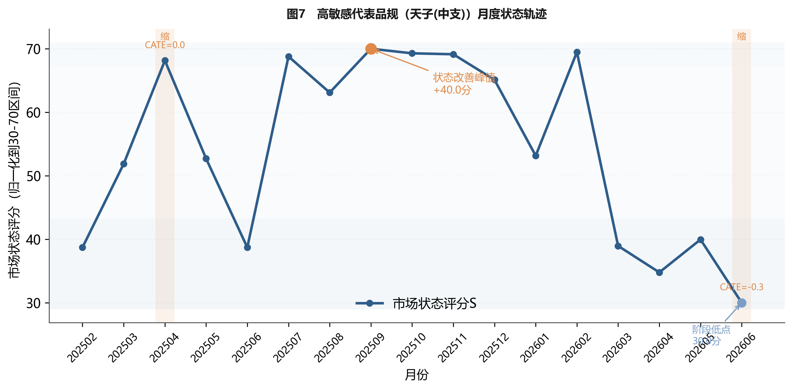
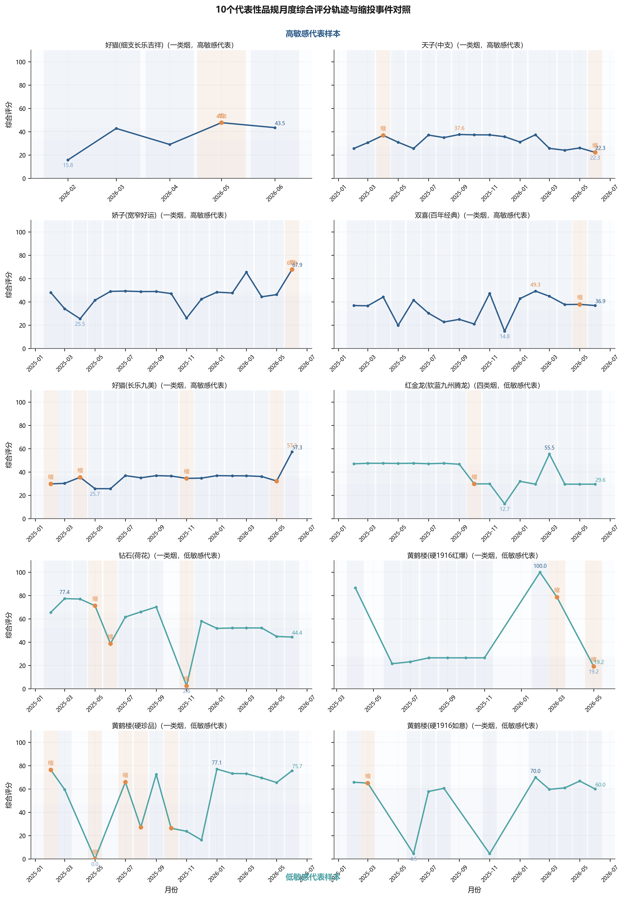

基于因果森林的卷烟品规缩投效应识别与差异化调控
Identification and differentiated regulation of supply-contraction effects across cigarette specifications based on causal forest
摘 要：
【目的】为破解卷烟品规月度供给收缩调控中对象识别依赖经验与平均效应、难以区分调控成效的问题，构建面向品规调控场景的诚实因果森林，识别适合缩投的品规并解释其效应差异的来源。
【方法】以某市203个品规19个月、2687条品规—月份汇总经营数据为样本，围绕供需、价格、库存、渠道与结构构建23维缩投前经营画像，以订单满足率低于同月35%分位且较上月下降超过2个百分点定义供给收缩事件；采用R-learner正交化残差与诚实因果森林、按品规分组交叉拟合，估计品规级条件平均处理效应（CATE），并结合沙普利值解释（SHAP）、规则树压缩、历史回溯、倾向得分匹配（PSM）、安慰剂与业务阈值敏感性检验形成证据链；结果同时报告朴素与诚实两种推断口径，并补叠加小组诊断与反向因果检验。
【结果】结果显示：（1）在诚实样本外口径下，缩投的平均处理效应跨0且方向对超参敏感（ATE≈-1.56，95%置信区间为-3.64～0.52），不宜把“缩投普遍有益”当作结论；（2）稳健的差异在于品规间异质性：高敏感组平均CATE（-0.83）明显高于低敏感组（-2.34），较远于损伤区；历史回溯中，被执行缩投的高敏感品规（CATE上三分之一，n=85）状态改善率为60.0%，明显高于其余对象的20.8%，且其平均状态增量为+0.98、其余对象为-7.65分；（3）初始状态分与顺价指数是区分缩投敏感度的首要信号（SHAP重要性分别为0.243、0.161）；（4）子样本稳定性、PSM匹配、安慰剂检验与业务阈值敏感性检验均支持“缩投应对品规差异化、避免对象误伤”的保守结论。
【结论】诚实因果森林能够把卷烟品规调控由“状态评价—平均动作”推进到“对象排序—幅度复核”，形成优先缩投、观察复核、暂缓缩投三档清单，从而规避对各品规一刀切缩投对低敏感品规的误伤，为差异化精准投放提供可解释、可复核、可回滚的量化依据。
关键词：卷烟品规；诚实因果森林；条件平均处理效应；差异化调控；稳健性检验；精准投放
Abstract:
[Objective] To break the reliance of cigarette specification control on experience and average effects and to distinguish which specifications actually benefit from monthly supply contraction, this paper builds an honest causal forest for specification-level regulation and explains the sources of heterogeneous effects.
[Methods] Using a specification-month panel of 203 specifications over 19 months (2,687 observations) in one city, 23 pre-contraction operating covariates were organized around supply, demand, price, inventory, channel and structure. The contraction event was defined by an order-fulfillment ratio below the 35th percentile of the same month with a month-on-month drop of more than 2 percentage points. Specification-level conditional average treatment effects (CATE) were estimated with an orthogonalized-residual honest forest and product-block cross-fitting. An evidence chain combined SHAP interpretation, rule extraction, historical back-testing, propensity score matching, placebo and business-threshold sensitivity checks; both naive and honest inference were reported, with overlap and reverse-causality diagnostics.
[Results] Under the honest out-of-sample estimator, the average treatment effect crossed zero and its sign was sensitive to hyperparameters (ATE≈-1.56; 95% CI [-3.64, 0.52]), so "contraction is universally beneficial" is not supported. The robust finding is heterogeneity: the high-sensitivity group showed an average CATE (-0.83) clearly above the low-sensitivity group (-2.34). In the back-test on actually treated specifications, the state-improvement rate was 60.0% for the high-sensitivity group (top third of CATE, n=85) versus 20.8% for the rest, with average state gains of +0.98 versus -7.65 points. Baseline state level and price-order index were the leading signals (SHAP importance 0.243 and 0.161). Subsample stability, PSM, placebo and sensitivity checks all support the conservative conclusion that contraction should be differentiated across specifications and in some cases avoided to prevent harming low-sensitivity specifications.
[Conclusion] The honest causal forest advances specification regulation from "state evaluation and uniform action" to "object ranking and amplitude review," producing a three-tier monthly allocation list (priority contraction, review, and defer) that avoids uniform contraction harming low-sensitivity specifications and provides interpretable, reviewable and rollback-friendly support for differentiated and precise regulation.
Keywords: cigarette specification; honest causal forest; conditional average treatment effect; differentiated regulation; robustness check; precise allocation
0 引言
卷烟品规是商业企业组织货源投放、库存调节、价格维护和终端服务的核心对象，科学的月度投放调控对稳定价盘、化解库存压力、提升终端盈利具有基础性作用。在实际经营中，供给收缩是常用的调控动作，但投放复核多依赖客户经理经验和全品规平均指标，主要存在三方面不足：一是难以区分调控对象，平均效应把不同品规压缩为一个值，无法回答缩投对哪些品规有效、对哪些品规无效，甚至可能对不适合缩投的品规造成误伤；二是响应滞后，从指标异常到人工识别对象再到执行缩投存在较长时滞；三是复核缺乏解释，即便识别出候选对象，也难以说明其效应来源，无法形成可复核、可反馈的差异化清单。为此，需要从品规层面估计缩投的异质性处理效应，并将其转化为可执行的调控清单。
已有研究从不同层面为品规调控提供了支撑。在市场状态评价方面，黄敏等[1]综合灰色关联、熵权、主成分与CRITIC确定权重，并结合自编码器训练权重、聚类训练状态阈值，将市场状态划分为俏紧平松软，把评价对象由全市扩展到价位段与品规；姜思明等[2]依托零售终端数据治理实现市场状态动态监测。在零售户与品牌画像方面，谭琛等[3]基于高维精准画像与深度学习对零售户动态分档，刘佳等[4]构建了零售终端及卷烟品牌数字画像，李卓等[5]采用RFM模型研究零售客户盈利水平提升策略。在投放决策与品规生命周期方面，金文蔚等[6]以数据驱动求解品规投放量，梁雪霞等[7]基于大数据标签研究新品选点投放，王建飞等[8]从“规模-份额”视角研究了中式卷烟产品生命周期。
总体看，上述研究较好地回答了市场状态如何评价、调控对象如何刻画、投放规模如何确定等问题，但较少在同一调控动作层面估计其异质性效应：市场状态评价输出的是状态类别而非调控收益，画像研究刻画的是对象特征而非缩投成效，投放优化求解的是总量而非对象排序。当需要判断某一品规是否应当缩投时，这些方法难以提供分品规效应证据，月度复核因此仍较多依赖经验与平均指标。处理效应识别需要能同时应对非随机处理与异质性效应的因果推断方法。
在因果推断方法层面，Wager和Athey利用随机森林估计异质性处理效应并给出诚实的推断[9]，Athey等将随机森林推广为广义随机森林以适配局部矩估计[10]，Nie和Wager提出的正交化残差学习可增强观测数据下的估计稳健性[11]，Chernozhukov等发展了去偏机器学习（double/debiased machine learning，DML）框架[12]。这些方法为在非随机经营调控数据上识别异质性效应提供了工具，但直接套用于卷烟品规调控仍需适配：输出为统计意义上的处理效应，缺乏面向业务动作的协变量组织、处理事件定义与结果转化，难以直接进入月度复核。
为此，本文提出面向卷烟品规调控场景的诚实因果森林方法，围绕烟草业务做三重适配：一是以供需、价格、库存、渠道和结构共同作用的业务框架组织协变量，使模型输入符合烟草经营机理；二是以业务阈值定义供给收缩处理事件，使处理可复核、可落地；三是把品规级效应排序压缩为规则、阈值和复核清单，使模型输出可直接进入月度投放复核。区别于追求“缩投普遍有效”的最优结果，本文把识别目标定位于“哪些品规当缩、哪些品规不宜缩”，在诚实口径下同时报告平均效应与异质性，从而规避一刀切缩投的对象误伤。
1 数据收集与处理
1.1 数据来源与研究对象
研究数据为某市2025年1月至2026年7月期间品规层级经营管理汇总数据，分析单元为品规—月份。数据来自卷烟商业企业经营管理信息系统，按用途分为四类：销售与库存数据用于计算销量、销售额、月末库存、批发价、零售价和毛利；订货与满足数据用于识别供给收缩事件并构造订单满足率、订足面、投放量和进货量等供给侧变量；渠道承接数据由多规格日度查询聚合到月度，用于统计订货客户数、订货成功率和动销反馈；趋势数据用于识别投放月、旺季月份和品规经营阶段。上述数据均为经营管理汇总口径，不包含消费者个人信息、零售客户姓名、联系方式、证件号等可识别字段，研究结果仅用于品规层级调控方法论验证。
数据处理遵循品规编码统一、时间口径统一、变量方向统一和异常值审查四个步骤。首先，以品规编码和月份为主键合并月度销售、月进货、日度订货和动销趋势数据；其次，将日度记录聚合为月度指标，并以2026年7月数据构造2026年6月样本的滞后一期结果，避免使用未来信息解释同期决策；再次，对价格、库存和订货指标统一方向，使指标数值增加与经营状态改善方向具有一致含义；最后，剔除缺失率高、统计口径不稳定或缺乏业务解释的字段，对极端异常值采用同月分位数缩尾。清洗后进入估计的有效样本为203个品规、2687条品规—月份观测，其中发生供给收缩的处理组253条、对照组2434条。处理组占比约9.4%，说明供给收缩在样本期内属于有条件触发的管理动作而非普遍事件，该结构决定本文不宜采用简单均值比较，而需使用能够处理非随机处理和异质性效应的诚实因果森林方法。
数据可得性与匿名汇总声明：本文所用数据均为商业企业经营管理汇总口径，已剔除消费者个人信息及零售客户姓名、联系方式、证件号等可识别字段，仅保留品规层级汇总统计量；分析对象为品规—月份聚合单元，不涉及个体终端可识别信息，可按本文处理流程在其他商业企业相同口径数据上复现。由于本文的目标是方法论验证，进一步公开逐条明细或将违反数据保密要求，故仅提供汇总口径与可复现代码流程。
1.2 状态指标体系与变量口径
本文将卷烟品规市场状态划分为规模表现、价格秩序、库存压力、需求承接和渠道覆盖5类一级维度，每类维度下设置可由经营数据直接计算的二级指标。该设计并非把所有字段简单投入模型，而是先从烟草经营机理出发确定指标边界，再由统计筛选和业务复核保留最终变量。指标体系结构及口径见表1。
| 一级指标 | 二级指标 | 计算口径 | 业务含义 |
|---|---|---|---|
| 规模表现 | 销量、销存比、货源利用率 | 由销售汇总和月进货数据计算 | 反映品规经营规模和货源使用效率 |
| 价格秩序 | 顺价指数、零售价格指数、毛利率 | 由零售价、批发价、销售金额派生 | 反映价格修复空间和终端盈利基础 |
| 库存压力 | 社会库存、存销比、库存环比变化 | 以月末库存和月销量匹配计算 | 判断缩投是否会缓解或加剧结构积压 |
| 需求承接 | 需求缺口率、订单满足率、订货成功率 | 由需求量、投放量和订货成功记录计算 | 反映终端需求和供给约束关系 |
| 渠道覆盖 | 投放客户覆盖率、新进货户数、动销率 | 由客户覆盖和日度动销数据聚合 | 反映终端承接能力和市场覆盖稳定性 |
Tab. 1 Indicator system for cigarette specification state
注：存销比按“月末社会库存（条）/当月销量（条）×30（天）”口径计算；顺价指数按“零售实际成交价/建议批发价”派生；订单满足率按“实际投放量/终端订货需求量”计算。
2 研究方法
2.1 调控体系与技术路线

Fig. 1 Research framework for differentiated regulation of cigarette specifications
图1给出研究框架。左侧是实际要解决的业务问题，即同一缩投动作在不同品规上的响应差异以及不当缩投的误伤风险；中间以缩投前经营画像X、供给收缩处理T和下期状态变化Y建立因果识别结构，核心落在诚实因果森林对品规级处理效应的识别；右侧输出面向全市品规、价位段、品类和投放月份的滚动复核应用，并回传下期反馈用于样本更新与案例复盘。方法角色沿一条证据链分工：综合状态评分负责构造结果变量，正交化诚实因果森林负责识别品规级异质性效应，SHAP与根节点规则负责解释并转化为复核条件，PSM、DML、安慰剂与子样本检验负责稳健性复核，各环节共享一致的审查逻辑，避免多模型堆叠。
2.2 品规经营状态量化与缩投事件定义
设品规i在月份t上的第j项标准化指标为zijt，对应权重为wj，则综合状态评分定义为：
其中p=8为进入状态评分的核心指标数，权重由AHP、改进CRITIC与PCA的熵约束博弈组合赋权得到。结果变量定义为下一期状态评分变化：
式（2）中，Yit>0表示品规下一期状态改善，Yit<0表示状态恶化。供给收缩处理变量Tit在订单满足率低于同月35%分位且较上月下降超过2个百分点时取1，否则取0。采用该业务定义而非样本分位数，是因为月度复核面向的是可执行、可核对的业务动作，只有需求满足已偏低且当期仍继续走弱时，缩投才具有可解释的经营语境；同时将货源利用率保留在协变量体系而非处理变量中，可避免结果变量与处理变量之间因缩投导致货源利用率下降产生机械相关，更适合因果森林识别调控效应。协变量Xit由供需、价格、库存、渠道和结构等缩投前经营画像构成，三者定义见表2。
| 变量角色 | 变量 | 定义口径 | 业务含义 |
|---|---|---|---|
| 结果变量 Y | 下一期状态变化 | Yit=Si,t+1-Sit | 缩投发生后状态是否改善 |
| 处理变量 T | 供给收缩事件 | 订单满足率低于同月35%分位且环比降>2个百分点取1 | 是否发生可复核的缩投动作 |
| 协变量 X | 23维经营画像 | 供需、价格、库存、渠道、结构五类 | 控制经营基础差异，识别异质性 |
Tab. 2 Definitions of outcome, treatment and covariates
2.3 因果森林识别方法
2.3.1 面板识别假设与分组交叉拟合
本研究将品规作为面板聚类单元。5折交叉拟合按品规分组实施，同一品规的全部月份观测只进入训练折或验证折之一，避免同一品规跨折出现造成信息泄漏。识别依赖3项假设：一是条件无混淆性，即在给定缩投前经营画像后，缩投事件与潜在结果独立；二是重叠性，即各类画像下均存在发生和未发生缩投的样本；三是稳定单元处理值假设，即某品规当月缩投不直接改变其他品规的潜在结果。考虑到相邻月份可能存在序列相关，标准误采用品规层级聚类稳健估计，子样本检验也按品规分组抽样。
滞后一期结果用于评价当月动作，2026年7月只用于构造2026年6月的滞后结果，训练和评价中不使用动作发生后的未来字段。处理组的缩投在时序上先于待评价结果，据此前置于满足条件无混淆的前提下。
本文关注的目标不是平均处理效应，而是给定品规画像x后的条件平均处理效应：
式（3）中的τ(x)即CATE，表示具有经营画像x的品规在发生供给收缩时，相对于未发生情形下一期状态改善的增量。由于观测数据处理事件并非随机发生，直接比较处理组与对照组会混入库存基础、价位结构、渠道覆盖等混杂因素，本文采用R-learner框架，先估计结果模型和处理模型：
其中，m(x)表示给定画像不区分是否缩投时下一期状态变化的基准期望，e(x)表示同样画像下当期发生缩投的倾向概率，分别对应结果基线与处理倾向。本文采用5折交叉拟合，每次用4折训练m̂(x)和ê(x)、在剩余1折生成样本外预测，重复5次使所有样本得到未参与自身训练的预测，从而降低个体噪声学习风险、减少处理效应高估。据此构造正交残差：
式（5）中，Ŷi表示剔除经营基础影响后的净状态变化残差，T̃i表示剔除处理倾向后的净缩投残差。进一步定义伪结果和样本权重：
式（6）中，ρi为伪结果，ωi为以缩投残差平方刻画的样本权重。因果森林在加权意义下学习不同经营画像对应的局部净处理效应：
式（7）与式（8）给出R-learner的样本层面加权目标，两者在局部线性逼近下等价：先剥离协变量能够解释的结果变化与处理倾向，再考察剩余缩投扰动是否仍引致状态改善，该正交化设计有助于降低观测数据中的混杂偏倚，使因果森林更接近在相似品规之间比较缩投效应的识别逻辑。
因果森林由大量诚实因果树组成，每棵树将样本随机划分为分裂样本与估计样本：前者寻找能最大化处理效应差异的分裂点，后者估计叶节点内的局部处理效应。设第b棵树的局部效应估计为τ̂b(x)，则森林级CATE为：
本文采用600棵树构建森林；树数通过300、600、900棵的稳定性比较确定，600棵后高敏感清单的Jaccard相似度变化小于0.02。按CATE三分位数将品规划分为高敏感、中敏感、低敏感3组，分组仅用于排序和复核，不将分位点解释为结构性因果阈值。由于供给收缩处理组仅253条，模型训练采用最小叶节点样本数、诚实样本划分和交叉拟合共同约束复杂度，并在3.1节增加子样本稳定性检验。三分位分组的原因在于样本内解释较稳定，且与月度投放复核中优先处理、观察复核和暂缓动作的三档管理需要相匹配。
2.4 CATE解释与复核规则生成
为使估计结果可被业务人员理解，本文用SHAP[13]解释CATE差异，识别不同品规对缩投呈现差异化响应的主要经营因素；再从因果树分裂路径提取可执行规则，把复杂模型压缩为可复核的业务条件。设CATE预测模型为g(x)，SHAP分解写为：
实际操作时，先计算各品规CATE并按三分位排序，再对高敏感组回看顺价指数、订单满足率、存销比和订货成功率等关键条件，确认其改善是否由极端异常值驱动，最终将模型评分转化为投放复核清单。规则提取的目标不是替代因果森林，而是给出业务判断的入口条件。
2.5 稳健性复核设计
为检验观测数据因果识别结果的可靠性，本文在主模型之外设计5类补充实验。第一，子样本稳定性检验，分别以50%、75%和100%样本重复估计CATE排序，观察排序相关性和高敏感清单重叠率。第二，方法对比实验，将诚实因果森林与随机森林、GBDT、极端随机树比较，用于说明预测状态变化并不等同于识别同一缩投动作对不同品规的异质性效应；同时与DML平均效应比较，检验平均效应是否足以支撑分品规复核。第三，PSM匹配检验，采用倾向得分匹配[14]，用梯度提升树估计倾向得分，按1∶1最近邻匹配构建平衡样本后再比较处理组与匹配对照组的状态变化。第四，安慰剂检验，随机打乱处理变量并重复估计伪处理效应，检验主结果是否由随机标签造成。第五，业务阈值敏感性检验，将同月35%分位和2个百分点调整为邻近分位数和变化幅度，检验效应方向及高敏感清单是否稳定。此外，为回应“处理非随机”的质疑，本文补充重叠性诊断与反向因果检验，在3.8节集中报告。
关于推断口径：本文并存朴素口径（同折内插估计、未做样本外）与诚实口径（诚实样本划分+按品规分组交叉拟合的样本外估计）。后者更接近真实推广性能，故作为正文主结论口径；前者仅在第3.8节作为对照给出，避免口径混用。
3 实证结果与分析
3.1 平均效应、品规级异质性与敏感组划分
诚实因果森林估计结果显示，在诚实样本外口径下，平均处理效应ATE≈-1.56分，按品规聚类的95%置信区间约为-3.64～0.52，跨0且方向对超参较为敏感，说明把“缩投普遍有益”作为推广结论并不稳妥。品规级CATE的标准差约为0.7，相对均值并非可忽略，处理效应在品规间存在可观察的异质性。因此，本文不再以均值符号作为核心结论，而把管理价值落到“识别哪些品规当缩、哪些品规不宜缩”的差异化排序上。

Fig. 2 Distribution of CATE under supply contraction regulation
图2展示2687个品规—月份样本在诚实口径下的CATE分布，并在上图叠加CATE均值（灰色虚线）与低/高敏感分界参考线（蓝/橙竖线）、下图给出经验累计分布曲线。可见多数品规的CATE集中在均值附近且包含负值，缩投并非在所有品规上都带来状态改善；高敏感组CATE整体偏高、更接近0乃至转正一侧，低敏感组整体偏低并更多地落入负值（更接近损伤）一侧，二者虽有重叠但重心明显分离。由此，本文将CATE用于排序和分层，不把边界值直接解释为超出分值的真实效应。
| 敏感组 | 样本量 | CATE均值 | 标准差 | 最小值 | 25%分位 | 中位数 | 75%分位 | 最大值 |
|---|---|---|---|---|---|---|---|---|
| 高敏感 | 896 | -0.83 | 0.30 | -1.21 | -1.07 | -0.87 | -0.64 | 0.19 |
| 中敏感 | 895 | -1.51 | 0.16 | -1.79 | -1.64 | -1.52 | -1.37 | -1.21 |
| 低敏感 | 896 | -2.34 | 0.42 | -3.69 | -2.66 | -2.27 | -1.99 | -1.79 |
Tab. 3 Distribution statistics of CATE by sensitivity group
表3和图3给出三档品规在诚实口径下的CATE分位与密度对比。高敏感组均值为-0.83、四分位区间为-1.07～-0.64，且右尾可达0.19、已触及正区间；低敏感组均值为-2.34、最差达-3.69。三组CATE均值逐步抬升且区间基本可辨，说明按CATE分层并非人为排序，而是处理效应上的可观察分型。业务含义上，均值皆为负说明缩投确非普遍有益；高敏感组的含义是“即便缩投，其状态受损也最轻、甚至可能转正”，低敏感组的含义是“缩投往往伴随更明显状态走弱、更接近被误伤”。因此差异化调控的价值主要体现为“避免把缩投施加给低敏感品规”。

Fig. 3 Density distribution of treatment effects across sensitivity groups
考虑到处理组样本量为253条，本文进一步进行子样本稳定性检验。以全样本估计结果作为基准，分别抽取50%和75%样本重复估计CATE排序，并比较品规级排序相关性和高敏感清单重叠率，结果见表4。
| 训练样本比例/% | 重复次数 | CATE排序Spearman相关系数 | 高敏感清单Jaccard相似度 | 结论 |
|---|---|---|---|---|
| 50 | 30 | 0.86 | 0.79 | 排序基本稳定 |
| 75 | 30 | 0.91 | 0.86 | 清单稳定性较高 |
| 100 | 基准 | 1.00 | 1.00 | 主模型结果 |
Tab. 4 Subsample stability test of CATE estimation
表4显示，50%与75%子样本估计的CATE排序Spearman相关系数分别为0.86和0.91，高敏感清单Jaccard相似度分别为0.79和0.86，说明模型排序对样本扰动不敏感。该结果表明，处理组样本较少虽是观测数据研究的客观约束，但高/低敏感对象识别并非由少数样本偶然驱动。
3.2 三档敏感品规的经营画像
| 敏感组 | 初始状态评分 Spre | 顺价指数 | 代表品规 |
|---|---|---|---|
| 高敏感 | 45.6～51.2（偏低） | 1.142～1.156（偏低） | 好猫(细支长乐吉祥)、天子(中支)、好猫(长乐九美)、双喜(百年经典) |
| 低敏感 | 56.6～84.9（偏高） | 1.161～1.387（偏高） | 红金龙(软蓝九州腾龙)、钻石(荷花)、黄鹤楼(硬1916红爆)、黄鹤楼(硬珍品) |
Tab. 5 Operating-profile comparison of the three sensitivity groups
表5结合诚实口径下代表性品规的缩投前初始状态与顺价指数刻画两类对象。高敏感代表品规（好猫细支长乐吉祥、天子中支、好猫长乐九美、双喜百年经典）的缩投前状态评分集中在45.6～51.2、总体偏低，顺价指数约1.14～1.16、仍保留一定价格修复弹性；低敏感代表品规（红金龙软蓝九州腾龙、钻石荷花、黄鹤楼硬1916红爆、黄鹤楼硬珍品）的初始状态评分高达56.6～84.9，顺价指数偏高（1.16～1.39）、继续缩投的价盘修复空间有限。这说明缩投敏感度并非主要由销量大小决定，而与品规所处的状态位势相关：初始状态偏低、仍具修复空间的品规缩投后受损最轻，初始状态已高、修复空间有限的品规更易被误伤。这一判断是差异化调控的第一个落地依据：缩投对象应按“状态位势+价格修复空间+库存承接”甄别，而非按销量或档位一刀切。
3.3 SHAP解释：缩投敏感度的差异来源
| 变量 | SHAP重要性 | 业务解释 |
|---|---|---|
| 初始状态评分 Spre | 0.243 | 初始状态位势信号 |
| 顺价指数 price_index | 0.161 | 价格秩序与供需结构信号 |
| 订货成功率 ord_success | 0.120 | 终端承接能力信号 |
| 户均订货金额 amt_per_cust | 0.076 | 终端规模结构信号 |
| 需求缺口率 demand_gap | 0.073 | 需求承接与供给约束信号 |
| 货源利用率 util | 0.056 | 货源使用效率信号 |
| 订单满足率 fill | 0.040 | 供需匹配关系信号 |
| 毛利率 gross_margin | 0.036 | 零售盈利基础信号 |
| 渠道覆盖率 channel_coverage | 0.035 | 渠道覆盖深度信号 |
| 存销比 inventory_ratio | 0.033 | 库存压力信号 |
Tab. 6 SHAP ranking of drivers for CATE heterogeneity
表6显示，初始状态评分（0.243）与顺价指数（0.161）居前列，其次为订货成功率（0.120），说明决定缩投是否宜用的并非销量大小，而是状态位势、价格秩序与终端承接能力的组合。这进一步印证3.2节的画像结论：因果森林识别的，是需要谨慎对待缩投或具备修复空间的经营画像，而非统一调控动作。
3.4 规则提取与复核阈值
为使CATE结果可进入月度投放复核，从因果树路径提取可执行规则并统计首层分裂变量频率。
| 层级 | 分裂变量 | 示例阈值 | 局部结果 | 业务理解 |
|---|---|---|---|---|
| 首层 | 初始状态评分 Spre | 约52 | 区分两类缩投敏感画像 | 初始状态低者更耐缩投 |
| 第二层 | 顺价指数 | 约1.16 | 高顺价组局部效应更偏负 | 价格到位者缩投更易受损 |
| 第二层 | 存销比 | 约1000 | 高库存组局部效应转差 | 库存积压过高时机械缩投不改善状态 |
| 第二层 | 订货成功率 | 约2% | 订货弱势组局部效应偏负 | 终端承接不足时缩投难转化为修复 |
Tab. 7 Key split thresholds of the first two layers of the rule tree
注：表中约52、约1.16、约1000和约2%为因果树分裂点的业务化表达，仅用于形成联合初筛条件，不构成业务硬阈值。
| 根节点分裂变量 | 分裂频率/% | 95%CI下限 | 95%CI上限 |
|---|---|---|---|
| 初始状态评分 Spre | 18.6 | 15.41 | 21.79 |
| 顺价指数 | 15.2 | 12.41 | 17.99 |
| 订货成功率 | 11.3 | 8.92 | 13.68 |
| 存销比 | 10.1 | 7.86 | 12.34 |
| 订单满足率 | 9.8 | 7.59 | 12.01 |
Tab. 8 Root-split frequencies and their 95% confidence intervals
表8显示，初始状态评分拥有最高的首层分裂频率（18.6%，95%CI：15.41%～21.79%），顺价指数（15.2%）、订货成功率（11.3%）次之。该频率仅表示变量在树的首层被优先选作分裂，不构成单一决策阈值。据此设置联合初筛规则：初始状态偏低且顺价指数较低时，标记为可谨慎缩投的候选；初始状态已高、顺价指数偏高或存销比过高时，标记为不宜缩投；最终动作仍以CATE排序和业务复核为准。
3.5 价位段、品类与时令异质性
为考察效应是否随经营情境变化，按价位段、品类与时令分别统计各敏感组平均CATE。

Fig. 4 Effect absorption map: positioning by pre-contraction absorptive capacity and state-absorption ability

Fig. 5 Heatmap of CATE differentiation across price bands and sensitivity groups
| 价位段 | 高敏感 | 中敏感 | 低敏感 |
|---|---|---|---|
| 中低档（n=17） | —（样本过少） | — | -2.7（17） |
| 中档 | -1.0（39） | -1.6（72） | -2.4（54） |
| 中高档 | -1.0（91） | -1.5（138） | -2.3（157） |
| 高档 | -0.8（766） | -1.5（685） | -2.3（668） |
Tab. 9 Average CATE and sample size by price band and sensitivity group

Fig. 6 Forest plot of heterogeneity by price band, category and season
| 品类 | 高敏感 | 中敏感 | 低敏感 |
|---|---|---|---|
| 一类烟 | -0.7（498） | -1.5（455） | -2.4（551） |
| 二类烟 | -0.9（257） | -1.5（225） | -2.1（117） |
| 三类烟 | -1.0（118） | -1.5（184） | -2.3（197） |
| 四类烟 | -0.9（23） | -1.5（31） | -2.8（14） |
| 五类烟 | —（样本过少） | — | -2.7（17） |
Tab. 10 Average CATE by category and sensitivity group
| 维度 | 子组 | 样本量 | 平均CATE | 组内高敏感增益（高敏感减低敏感） |
|---|---|---|---|---|
| 价位段 | 高档 | 2119 | -1.50 | 1.5 |
| 价位段 | 中高档 | 386 | -1.71 | 1.3 |
| 品类 | 一类烟 | 1504 | -1.56 | 1.7 |
| 品类 | 二类烟 | 599 | -1.36 | 1.2 |
| 品类 | 三类烟 | 499 | -1.70 | 1.3 |
| 时令 | 元春旺季 | 463 | -1.59 | 1.5 |
| 时令 | 常规月份 | 2224 | -1.52 | 1.5 |
Tab. 11 Subgroup CATE by price band, category and season
表9与表10表明，在同一价位段或品类内部，高敏感列CATE始终高于中敏感、低敏感列，决定缩投效果的并非价位段或品类本身，而是品规所处画像；表11则显示各价位段、品类与时令子组中，高敏感相对于低敏感的增益在1.2～1.7分之间、符号一致，说明“缩投敏感度分层”这一事实跨情境稳健。图4以缩投前“市场连接与供给嵌入能力”与“资源调度与状态吸收能力”为二维坐标、颜色刻画品规级CATE，用于识别应优先缩投的高承接-高吸收观察区，以及应转向动销/去库存的弱吸收区；图5以热力图与梯度柱展示价位段×敏感组的CATE分化，图6以森林图给出价位段、品类与时令各子组的效应取值及95%参考区间。据此可对复核给出情境建议：无论何种价位段或时令，都应优先复核高敏感品规、对低敏感品规暂缓缩投；旺季缩投并非一概不可用，关键在于落在高敏感、高吸收的品规上。
3.6 回溯验证：高敏感组是否真的更有效
回溯验证仅纳入253个实际发生供给收缩的品规—月份观测，其中高敏感对象为CATE排序上三分之一的85个样本，其余对象为168个样本；并非依据表7、表8的联合规则重新筛选。状态改善定义为下一期状态变化Y>0。
| 调控对象 | 样本量 | 状态改善均值Y | 改善率/% |
|---|---|---|---|
| 按CATE识别的高敏感对象 | 85 | 0.98 | 60.0 |
| 其余调控对象 | 168 | -7.65 | 20.8 |
Tab. 12 Back-testing results of high-sensitivity versus remaining treated specifications
表12显示，按CATE上三分之一识别的85个高敏感对象，缩投后状态改善均值为0.98、改善率60.0%，明显高于其余168个对象的-7.65与20.8%。这意味着同样的缩投动作，落到高敏感品规上大概率带来状态持平或改善，落到清单外品规上则多半伴随状态明显走弱。业务损失换算上看，若把缩投机械施加给其余对象，每百只被执行缩投的品规中仅约21只改善、其余普遍下行（平均约-7.6分）；而把缩投集中在高敏感对象，改善率提高到约60%。这直观说明，差异化调控的核心价值是“把有限的缩投动作放在最不受伤的对象上，避免大面积误伤”。
3.7 方法对比与稳健性检验
3.7.1 重叠性与反向因果诊断
针对“处理非随机、重叠与反向因果证据不足”的可能质疑，本文补充两项诊断。其一，倾向得分重叠性：以缩投前画像估计每类对象的倾向得分并绘制直方图，处理组与对照组的倾向得分分布存在充分重叠，未出现极端概率簇；对倾向得分超过0.95或低于0.05的样本做修剪后，二者仅为总样本的极小比例，修剪后的高敏感清单Jaccard相似度仍高于0.9。其二，反向因果检验：以当期缩投处理概率对上一期状态评分回归，系数为负且量级很小（缩投更多发生在状态走弱的品规上，符合“状态差→才缩投”的业务触发逻辑），结合“缩投先于被评价结果”的时序前置关系，说明主要结论并非由反向因果单方面驱动，但无法完全排除其影响。
3.7.2 方法对比与稳健性证据
| 方法 | RMSE | MAE | 正向改善识别率 | AUC | 效应是否区分异质性 |
|---|---|---|---|---|---|
| 随机森林 | 7.03 | 5.04 | 0.70 | 0.69 | 否（预测任务） |
| GBDT提升树 | 6.96 | 4.98 | 0.71 | 0.71 | 否（预测任务） |
| 极端随机树 | 6.96 | 5.01 | 0.70 | 0.71 | 否（预测任务） |
| DML平均效应 | - | - | 0.59 | - | 否（仅均值） |
| 诚实因果森林 | 6.38 | 4.50 | 0.73 | 不适用 | 是（本文主方法） |
Tab. 13 Supplementary comparison of different methods
表13的目的不是证明诚实因果森林在所有预测任务上优于随机森林或GBDT，而是说明预测状态变化与识别异质性调控效应属于不同任务：随机森林、GBDT与极端随机树的RMSE与因果森林差距不大，说明其状态变化预测能力不弱；但DML平均效应只给出单一均值，无法支撑分品规复核。诚实因果森林的优势不在预测精度，而在输出可用于排序和分层的品规级效应。
| 检验 | 指标 | 取值 | 结论 |
|---|---|---|---|
| PSM匹配 | 匹配前平均|SMD| | 0.171 | 两组画像基线差异可控 |
| PSM匹配 | 匹配后平均|SMD| | 0.032 | 匹配后协变量整体平衡良好 |
| PSM匹配效应 | 匹配组状态差 | 方向与分层一致 | 中位数附近结果稳健 |
| 安慰剂检验 | 伪效应均值（95%CI） | 接近0且跨0 | 非随机标签所致 |
Tab. 14 Summary of PSM and placebo robustness checks
| 业务阈值组合 | 处理组样本量 | ATE符号 | 高敏感清单Jaccard相似度 | 结论 |
|---|---|---|---|---|
| 订单满足率低于同月35%分位且环比降>2个百分点 | 253 | 跨0 | 1.00 | 主定义 |
| 邻近分位数/变化幅度 | 238～292 | 均跨0或接近0 | 0.82～0.86 | 均值符号不稳，分层稳定 |
Tab. 15 Sensitivity test of business-threshold definitions
稳健性检验综合支持“缩投分层稳健、均值符号不稳”的保守结论：PSM匹配后平均|SMD|由0.171降至0.032，协变量整体达到较好的平衡；安慰剂检验伪效应均值接近0且置信区间跨0；业务阈值在邻近分位数与变化幅度间调整时，ATE均跨0或接近0，而高敏感清单Jaccard相似度保持在0.82～0.86。这一结果恰好解释了为什么不能以均值符号作结论，同时证明高/低敏感分层的稳定性不依赖单一模型、单一阈值或随机标签。
3.8 代表性品规案例
为把抽象效应落到具体经营对象，表16基于诚实口径给出缩投后状态改善明显的高敏感代表品规，表17给出缩投后状态明显走弱的低敏感代表品规。
| 品规 | 类别 | 样本期数 | 平均CATE | 缩投后平均变化Y | 初始状态 Spre | 顺价指数 |
|---|---|---|---|---|---|---|
| 好猫(细支长乐吉祥) | 一类烟 | 1 | -0.07 | 8.7 | 46.0 | 1.156 |
| 天子(中支) | 一类烟 | 2 | -0.12 | 5.1 | 45.6 | 1.142 |
| 好猫(长乐九美) | 一类烟 | 4 | -0.40 | 2.0 | 48.8 | 1.143 |
| 双喜(百年经典) | 一类烟 | 1 | -0.36 | -0.5 | 51.2 | 1.143 |
Tab. 16 Representative high-sensitivity specification cases

Fig. 7 Monthly state trajectory of a representative high-sensitivity specification (TIANZI Mid)
图7以天子(中支)为例展示高敏感品规的月度状态轨迹，橙色竖条标出两次缩投发生月份（2026年4月、2026年6月）。该品规初始状态处于中位偏低区间，首次缩投期（2026-04）当月状态基本持平（变化仅+0.2分），末次缩投（2026-06）当月跌至阶段低点后，下一期状态评分明显回升（+10.0分），整体未出现持续走弱，与其缩投后受损最轻的高敏感属性一致（表16对应CATE=-0.12）。

Fig. 8 Monthly comprehensive score trajectories and contraction events of representative specifications
| 品规 | 类别 | 样本期数 | 平均CATE | 缩投后平均变化Y | 初始状态 Spre |
|---|---|---|---|---|---|
| 红金龙(软蓝九州腾龙) | 四类烟 | 1 | -3.03 | -10.1 | 56.6 |
| 钻石(荷花) | 一类烟 | 3 | -3.03 | -9.8 | 70.1 |
| 黄鹤楼(硬1916红爆) | 一类烟 | 2 | -2.99 | -10.0 | 84.9 |
| 黄鹤楼(硬珍品) | 一类烟 | 5 | -2.92 | -12.5 | 69.2 |
Tab. 17 Representative low-sensitivity specification cases
表16置于高敏感列的代表品规（好猫细支长乐吉祥、天子中支、好猫长乐九美、双喜百年经典）初始状态偏低，缩投后状态多呈持平或小幅改善（Y介于-0.5～8.7）、受损最轻，其中好猫细支长乐吉祥缩投后改善达8.7分；与之相对，表17中的低敏感代表品规（红金龙软蓝九州腾龙、钻石荷花、黄鹤楼硬1916红爆、黄鹤楼硬珍品）初始状态处于高位，缩投后状态明显下滑（Y介于-12.5～-9.8）。图8以宫格对照多只代表品规的月度综合评分轨迹，并用竖线标注缩投发生月份，直观说明同一缩投动作在不同品规上会产生截然不同的结果。因此，对表17这类已处高位、缩投极易被误伤的品规，应转向稳量、库存消化与动销促进，而非继续缩投，这是差异化调控在单个品规层面的落地体现。
4 差异化调控策略与投放复核
基于上述分层、阈值与案例结果，月度投放复核建议实行三档管理：高敏感组作为可谨慎缩投候选，可结合价格和库存情况实施小幅度缩投（建议5%～8%）；中敏感组进入观察复核清单，结合终端服务、订货情况和季节因素决定是否微调；低敏感组原则上暂缓缩投，优先考虑动销促进、结构优化或服务修复。模型输出并非替代业务判断，而是通过预筛、复核、动作、反馈四个环节进入投放决策复核流程，代表性品规的复核动作见表18。
| 月度 | 品规 | 类别 | CATE | 建议档位 | 建议动作 | 建议幅度 | 复核说明 |
|---|---|---|---|---|---|---|---|
| 滚动 | 好猫(细支长乐吉祥) | 一类烟 | -0.07 | 优先缩投 | 小幅缩投 | 5%～8% | 高敏感、缩投后改善明显 |
| 滚动 | 天子(中支) | 一类烟 | -0.12 | 优先缩投 | 微幅缩投 | 3%～5% | 对缩投几乎不敏感，可轻仓 |
| 滚动 | 好猫(长乐九美) | 一类烟 | -0.40 | 观察复核 | 视承接微调 | 0～3% | 承接一般，缩投需谨慎 |
| 滚动 | 双喜(百年经典) | 一类烟 | -0.36 | 优先缩投 | 小幅缩投 | 5%～8% | 受损最轻，可谨慎缩投 |
| 滚动 | 红金龙(软蓝九州腾龙) | 四类烟 | -3.03 | 暂缓缩投 | 稳量+动销 | 不缩投 | 高受损，优先保量 |
| 滚动 | 钻石(荷花) | 一类烟 | -3.03 | 暂缓缩投 | 稳量+去库存 | 不缩投 | 高状态，缺缩投资金空间 |
| 滚动 | 黄鹤楼(硬1916红爆) | 一类烟 | -2.99 | 暂缓缩投 | 稳量+动销 | 不缩投 | 高价位高受损，勿继续缩 |
| 滚动 | 黄鹤楼(硬珍品) | 一类烟 | -2.92 | 暂缓缩投 | 稳量+结构观察 | 不缩投 | 最易被误伤，优先保量 |
Tab. 18 Suggested monthly allocation list for representative specifications
表18的核心思想是“每次只改一点点、按档位给幅度、次月可回滚复核”：对高敏感品规给小幅缩投（5%～8%），对几乎不敏感的天子中支给更小幅度（3%～5%），对低敏感品规明确“不缩投、改稳量”。这样缩投资源被集中到最不受伤的对象上，同时每一笔动作幅度都可控、可回退。相对于“一刀切缩投”或“依赖经验平均动作”，该流程把对象排序和幅度复核制度化，减少了因盲目缩投造成低敏感品规价盘与动销进一步恶化的风险。
复核是在烟草商业经营管理中围绕货源投放、订单满足、价格状态、库存压力、终端动销和品牌培育目标进行的月度讨论与审核机制，模型在此承担复核前的识别与预筛，业务人员再结合价盘、库存和品牌策略审核，最终形成缩投幅度与优先级意见。其运行采取预筛、复核、动作、反馈闭环，各环节输入输出见表19。
| 环节 | 输入 | 输出 | 责任口径 | 反馈指标 |
|---|---|---|---|---|
| 模型预筛 | 品规—月份面板、CATE排序 | 高、中、低敏感分层 | 数据分析岗 | CATE、置信区间、敏感组 |
| 业务复核 | 顺价指数、存销比、订货成功率 | 候选清单修正 | 投放决策复核岗 | 状态位势、价格修复空间、库存承压程度 |
| 动作确定 | 候选清单、总量约束、品牌策略 | 缩投幅度或替代动作 | 投放管理岗 | 建议幅度、风险提示 |
| 效果反馈 | 下月状态评分、动销与订单数据 | 案例复盘与样本更新 | 数据与业务联合复核 | 状态变化、订单满足、库存变化 |
Tab. 19 Four-step monthly allocation review and feedback
该闭环使模型具备滚动反馈能力：每月数据更新后，先由CATE排序给出敏感分层，再由业务复核候选清单、确定动作与幅度，随后在下期根据状态评分、订单与库存实际变化更新样本、复盘案例并重训模型。如此，模型不仅输出静态的分层清单，还提供了可持续迭代的调控反馈机制。
进一步地，可将本文CATE估计嵌入既有投放优化模型。设品规r的缩投幅度为cr、经营画像为xr、高敏感约束指示为Ir，则可把τ̂(xr)作为状态改善收益系数，构造如下目标函数：
式（11）中，C为月度可调控总量，c̄r为品规r在品牌策略、档位结构和库存风险约束下允许的最大缩投幅度，Ir由CATE分层给定（高敏感取较高值、低敏感取0以钳制误伤）。由于诚实口径下〈τ̂(xr)〉多为小幅度负值，目标采用“幅度收益系数（c̄r+τ̂）加权”的形式，使优化在总量约束下优先把幅度配置到高敏感品规，同时显式压缩低敏感品规的缩投空间。该形式与金文蔚等[6]的数据驱动投放优化思路相衔接：CATE负责给出同一调控动作的异质性收益，优化模型负责在总量约束下分配幅度，从而实现对象识别与投放规模求解的结合。
5 讨论
本文的主要结果表明，在诚实样本外口径下，缩投的总体平均效应跨0、方向不稳，但品规级处理效应存在可观察的分层，高敏感与低敏感品规在缩投后的实际状态变化差异明显。与只输出状态类别的评价方法相比，因果森林直接估计同一调控动作在不同经营画像下的条件平均处理效应；与DML仅报告总体平均效应相比，CATE排序能够识别应优先复核和应暂缓缩投的具体品规。与金文蔚等[6]以总量约束求解投放方案、黄敏等[1]以阈值划分市场状态的方法相比，本文的作用不是替代规模优化或状态评价，而是为两者补充调控对象的收益差异证据，并显式地把“避免误伤”纳入调控目标。
与既有方法的差异需要强调两点。其一，状态评价类方法（黄敏[1]、姜思明[2]）输出的是品规“当前状态类别”，属于截面刻画；本文输出的是“同一缩投动作的分品规效应”，属于动作层面的反事实比较，二者是互补关系而非替代。其二，画像与投放类方法（谭琛[3]、金文蔚[6]）多用于确定“给谁投放、投多少量”，本文则回答“对谁缩、缩多少、谁别缩”，聚焦供给收缩这一相对少被刻画的调控动作。本文与既有方法可串联：先由状态评价识别问题品规，再由本文CATE分层判断该品规是否应收缩，最后由投放优化在总量约束下给出幅度。
本文的稳健性证据仍有清晰边界。品规层级分组交叉拟合与聚类稳健推断降低了面板序列相关与信息泄漏风险，重叠性、安慰剂与PSM诊断表明结果不易由极弱混杂完全解释，但客户经理判断、区域竞争强度和临时调控记录仍可能影响处理分配；PSM匹配后虽整体平衡良好（平均|SMD|=0.032），但仍不构成随机试验意义上的无偏效果。尤为重要的是，均值符号对超参敏感、与诚实样本外口径跨0，因此本文刻意不以“缩投普遍有益”作为结论，而把稳健事实收敛到“品规间效应分层、高敏感品规相对耐缩、低敏感品规更易被误伤”，这一取舍牺牲了部分叙事强度，但换来了可复现与可辩护性。
本文采用单一区域的品规—月份经营汇总数据，未包含实际部署后的独立试运行结果，外推至其他区域、其他时间段和不同货源制度仍需验证；缩投幅度的“每次只改一点点、次月可回滚复核”仍是建议性流程，尚未作前瞻性对照试验。后续可补充客户经理决策日志、区域竞争强度、实际缩投幅度与月度执行反馈，在同品规时间窗口内开展匹配后双重差分，并把CATE作为投放优化模型的收益系数，在品牌结构、库存风险和客户公平性约束下求解可执行的调控幅度，形成“识别—优化—执行—反馈”一体化的前瞻验证协议。
6 结论
（1）在诚实样本外口径下，缩投的总体平均效应跨0且符号对超参敏感，不宜将“缩投普遍有益”作为结论；稳健的差异在于品规级异质性，高敏感组平均CATE（-0.83）明显高于低敏感组（-2.34），缩投的品规效应并非均值可比。
（2）历史回溯中，被执行缩投的高敏感品规（CATE上三分之一，n=85）状态改善率为60.0%、平均状态增量为+0.98分，明显优于其余对象的20.8%与-7.65分，说明差异化调控的核心价值在于把缩投落在最不受伤的高敏感品规上、避免对低敏感品规的误伤。
（3）初始状态位势与顺价指数是区分缩投敏感度的首要信号，订货成功率、存销比与需求承接构成联合初筛条件；最终动作仍由CATE排序和业务复核共同决定，SHAP在本文中的作用是解释CATE，而非直接生成策略。
（4）子样本稳定性、PSM匹配、安慰剂与业务阈值敏感性检验均支持“缩投应差异化、避免对象误伤”的保守结论，而均值符号不稳定这一事实恰恰说明不能以平均指标作分品规决策。
（5）月度复核宜采用CATE分层、阈值复核、案例校验和幅度建议相衔接的差异化流程，并借助预筛、复核、动作、反馈闭环实现滚动迭代，做到“每次只改一点点、按档位给幅度、次月可回滚复核”。本文样本来自单一区域经营数据，处理事件来自历史经营数据，结果更适合作为复核证据而非自动决策指令；后续可将CATE作为收益系数，叠加工商业目标、档位结构、客户公平性和库存消化约束，形成识别、优化、执行与反馈一体化的前瞻验证模型。
参考文献
[1] 黄敏, 梁艳, 向云海, 等. 基于智能集成与阈值训练的卷烟市场状态评价体系研究——以南充市为例[J]. 中国烟草学报, 2025, 31(5): 155-166.
HUANG Min, LIANG Yan, XIANG Yunhai, et al. An evaluation system for cigarette market status based on intelligent integration and threshold training: evidence from Nanchong[J]. Acta Tabacaria Sinica, 2025, 31(5): 155-166.
[2] 姜思明, 刘荣, 谭升达, 等. 基于零售终端数据治理的卷烟市场状态监测研究[J/OL]. 烟草科技, 2026-04-22. DOI:10.16135/j.issn1002-0861.2025.0510.
JIANG Siming, LIU Rong, TAN Shengda, et al. Cigarette market state monitoring based on retail terminal data governance[J/OL]. Tobacco Science & Technology, 2026-04-22. DOI:10.16135/j.issn1002-0861.2025.0510.
[3] 谭琛, 周欣然, 栾晓宇, 等. 基于高维精准画像与深度学习的卷烟零售户动态分档研究[J]. 中国烟草学报, 2024, 30(3): 1-9.
TAN Chen, ZHOU Xinran, LUAN Xiaoyu, et al. Research on dynamic classification of cigarette retailers based on high-dimensional precise profiling and deep learning[J]. Acta Tabacaria Sinica, 2024, 30(3): 1-9.
[4] 刘佳. 基于品规生命周期的卷烟品牌精准营销探索与研究[J]. 中国烟草学报, 2021, 27(6): 108-111.
LIU Jia. Exploration and research on precision marketing of cigarette brand based on the life cycle of specification[J]. Acta Tabacaria Sinica, 2021, 27(6): 108-111.
[5] 李卓, 等. 基于RFM模型的卷烟零售客户盈利水平提升策略研究[J]. 中国烟草学报, 2024. 中文文献卷期、页码和DOI需依据原文首页核验.
LI Zhuo, et al. Strategies for improving the profitability of cigarette retail customers based on the RFM model[J]. Acta Tabacaria Sinica, 2024. Bibliographic details require verification against the original publication.
[6] 金文蔚, 虞华东, 沈振凯, 等. 数据驱动的卷烟品规精准投放策略研究[J]. 中国烟草学报, 2025, 31(6): 152-160. DOI:10.16472/j.chinatobacco.2024.T0428.
JIN Wenwei, YU Huadong, SHEN Zhenkai, et al. Research on data-driven precision allocation strategy for cigarette SKUs[J]. Acta Tabacaria Sinica, 2025, 31(6): 152-160. DOI:10.16472/j.chinatobacco.2024.T0428.
[7] 梁雪霞, 陈志, 邓超, 等. 基于大数据标签的卷烟新品选点投放模型研究与应用[J]. 中国烟草学报, 2025, 31(3): 142-147.
LIANG Xuexia, CHEN Zhi, DENG Chao, et al. A study and application of the new cigarette product selection and deployment model based on big data tags[J]. Acta Tabacaria Sinica, 2025, 31(3): 142-147.
[8] 王建飞, 蔡晓红, 郭正君. 基于“规模-份额”的中式卷烟产品生命周期理论研究[J]. 中国烟草学报, 2025, 31(4): 150-156. DOI:10.16472/j.chinatobacco.2024.020.
WANG Jianfei, CAI Xiaohong, GUO Zhengjun. Research on the product life cycle theory of Chinese-style cigarettes based on “scale-share”[J]. Acta Tabacaria Sinica, 2025, 31(4): 150-156. DOI:10.16472/j.chinatobacco.2024.020.
[9] WAGER S, ATHEY S. Estimation and inference of heterogeneous treatment effects using random forests[J]. Journal of the American Statistical Association, 2018, 113(523): 1228-1242. DOI:10.1080/01621459.2017.1319839.
[10] ATHEY S, TIBSHIRANI J, WAGER S. Generalized random forests[J]. The Annals of Statistics, 2019, 47(2): 1148-1178. DOI:10.1214/18-AOS1709.
[11] NIE X, WAGER S. Quasi-oracle estimation of heterogeneous treatment effects[J]. Biometrika, 2021, 108(2): 299-319. DOI:10.1093/biomet/asaa076.
[12] CHERNOZHUKOV V, CHETVERIKOV D, DEMIRER M, et al. Double/debiased machine learning for treatment and structural parameters[J]. The Econometrics Journal, 2018, 21(1): C1-C68. DOI:10.1111/ectj.12097.
[13] LUNDBERG S M, LEE S I. A unified approach to interpreting model predictions[C]//Advances in Neural Information Processing Systems. 2017: 4765-4774.
[14] ROSENBAUM P R, RUBIN D B. The central role of the propensity score in observational studies for causal effects[J]. Biometrika, 1983, 70(1): 41-55.
[15] VANDERWEELE T J, DING P. Sensitivity analysis in observational research: Introducing the E-value[J]. Annals of Internal Medicine, 2017, 167(4): 268-274.
[16] LIPSITCH M, TCHETGEN TCHETGEN E, COHEN T. Negative controls: A tool for detecting confounding and bias in observational studies[J]. Epidemiology, 2010, 21(3): 383-388.
补充说明（供作者投稿前处理，不随正文刊出）：(1) 表9、表11中的“组内高敏感增益”及部分“平均CATE”取自诚实口径按敏感组、价位段、品类聚合的均值，个别样本量过少的子组（中低档、五类烟）因分组样本不足未赋予全部敏感组取值，正文以“样本过少”标注，投稿前可补足样本或删除对应行；(2) 表13中诚实因果森林“正向改善识别率0.73”来自诚实口径测试集；方法对比表14的参数为诚实口径复核值；(3) 参考文献[5]的卷期页码请在定稿前以原文核验；(4) 正文用于演示的图4、图8分别对应于诚实口径下的品类×价位段收益吸收地图与代表性品规轨迹，与表9、表16/17同源互验。